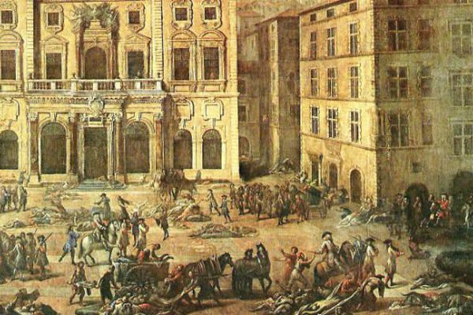
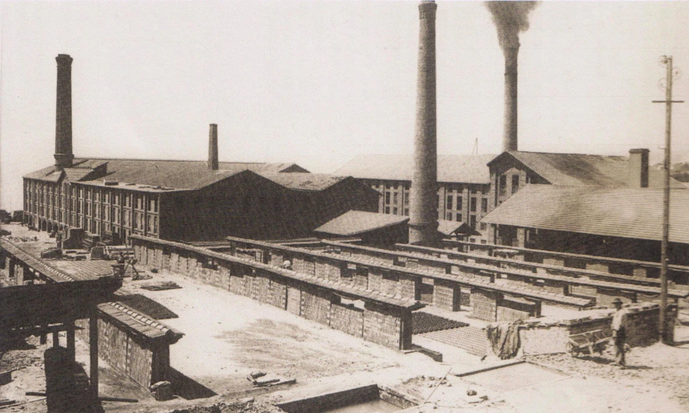

Bienvenue à Marseille
| Plus ancienne ville de France fondée il y a 2 600 ans. |
1ère communauté des communes françaises, la Métropole Aix Marseille Provence |
Superficie de la ville : 240 km2 dont 100 km2 d’espaces naturels. |
La malédiction de Marseille
Sa popularité et son utilité va se décliner durant l’Antiquité tardive et le haut Moyen Âge, au profit d’Arles.
À Marseille, l’évêque Proculus fait par exemple construire une grande cathédrale durant le Ve siècle, afin de réaffirmer l’importance de sa ville.
À cette époque, les évêques s’affirment partout en Europe et s’imposent comme les principales autorités urbaines.
Ce n'est pas suffisant et Marseille peine à se maintenir.
Elle est régulièrement pillée, à la fois par les Francs qui conquièrent la Provence dans les années 740 et plus tard
par des pirates : des Sarrasins établis en Sardaigne et sur le littoral provençal, des Grecs, et même des Normands.
Comme si ça ne suffisait pas, la ville connaît également plusieurs épidémies de peste (notamment en 643 et en 689).

la population baisse rapidement.
Faute de bras pour l’entretenir, le front de mer s’envase et s’ensable, ce qui pénalise l’économie.
La population se replie autour de noyaux fortifiés, en l’occurrence une petite forteresse sur le Mont Babon, construite grâce au réemploi des pierres du théâtre antique.
C’est un signe fort : du théâtre romain au château médiéval, Marseille entre véritablement dans le Moyen Âge.
Plusieurs causes expliquent le peu de vestiges du Moyen Âge : les destructions dues au sac des Aragonais de 1423 et celles de la période révolutionnaire, les constructions postérieures qui arasent les niveaux médiévaux pour s’appuyer sur l’antique et le désintérêt des édiles dont témoigne, à la fin du XIXe siècle, la destruction de l’église Saint-Martin.
Après un Moyen-Age mouvementé, Marseille devient française
Pour les rois de France, le port de Marseille est un atout dont ils vont tirer parti pour leurs expéditions en Italie.
Louis XIII et Louis XIV avec leurs ministres respectifs, Richelieu et Colbert, nourrissent de grandes ambitions maritimes et commerciales pour la ville.
Marseille est finalement rattachée à la France par Louis XI en 1482, lors de l'union du Comté de Provence au royaume de France.
L’histoire de Marseille est complexe, faite de pouvoir, de commerce et de hasards.
Avec la conquête de la ville par Jules César, la part belle est donnée à Arles.
Les affaires deviennent florissantes de l’autre côté du Rhône mais Marseille prend sa revanche 10 siècles plus tard avec l’arrivée des Francs.
En témoignent, les édifices d’art roman bâtis dans la cité phocéenne.
Cependant, c’est au XIXème siècle que Marseille vit un second âge d’or en redevenant une place forte du commerce en Méditerranée.
Depuis cette période, la ville a toujours connu une position favorable.
L’ensoleillement exceptionnel de la ville n’y est probablement pas pour rien et son histoire n’est pas finie.
Marseille du 20ème et 21ème siècle
|
| Façade maritime : 57 kilomètres dont 20 kilomètres de Calanques. |
Jumelage avec 13 villes dans le monde |
5ème port de Méditerranée – 2020 : 2 millions de croisiéristes. |
Pour acquérir cette position, Marseille a passé un siècle chargé
1900 – 1914 : Marseille dans la seconde Révolution Industrielle
1914 – 1945. Transformations en profondeur du Monde et de l’industrie
1945 – 1969. Fin du système industrialo-portuaire de Marseille
1945. Le port de Marseille devient un port colonial essentiellement tourné vers le Maghreb.
Fin des années 1950, le système s’effondre:
1969 – 2000. Crises et Recomposition de l’industrie à Marseille

Marseille brille aujourd'hui grâce à un paysage magnifique, un club de football et ses supportaires légendaires, des habitants patriotes, amoureux de leur ville génération en génération.
Plus de 17 000 jeunes viennent s'installer tous les ans pour mettre à profit leurs expertises et faire florire Marseille encore un peu plus.
Elle est fun, belle, attachante, ,rempli de défauts.
Bienvenue à Marseille.